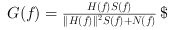

Deconvolution with Wiener method
imout = imdeconvl2(imin,psf,lambda)
Source Image
Blur function
Noise Factor
Deblurred Image
In mathematics, Wiener deconvolution is an application of the Wiener filter to the noise problems inherent in deconvolution. It works in the frequency domain, attempting to minimize the impact of deconvoluted noise at frequencies which have a poor signal-to-noise ratio. The Wiener deconvolution method has widespread use in image deconvolution applications, as the frequency spectrum of most visual images is fairly well behaved and may be estimated easily. Wiener deconvolution is named after Norbert Wiener. The Wiener deconvolution filter provides such a g(t) The filter is most easily described in the frequency domain:

1. Wikipedia : http://en.wikipedia.org/wiki/Wiener_deconvolution
2. OpenCV Example : http://gigadom.wordpress.com/category/opencv/